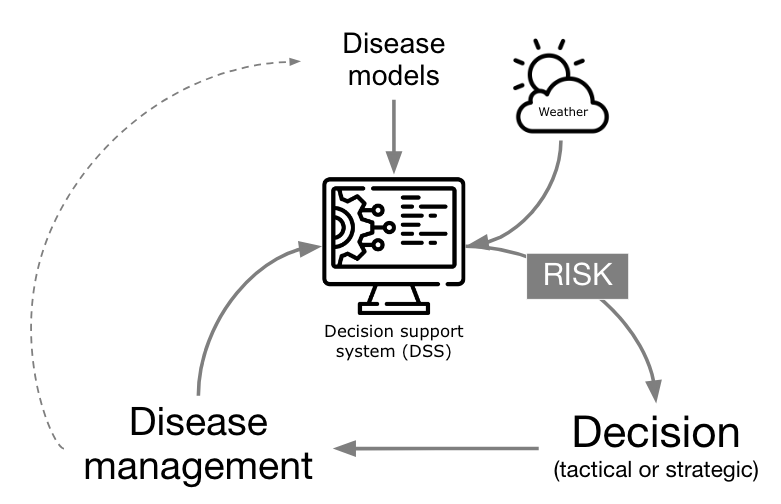
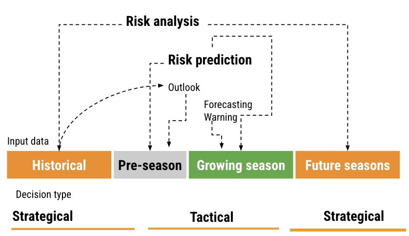
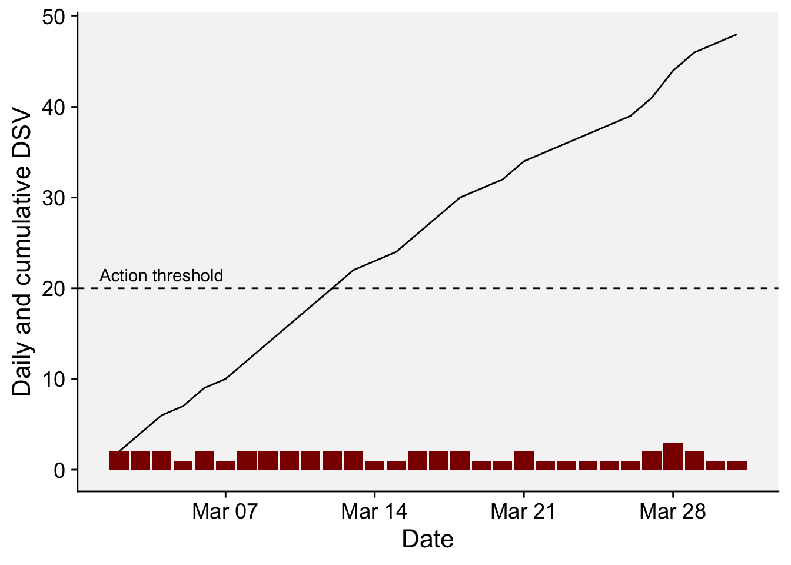
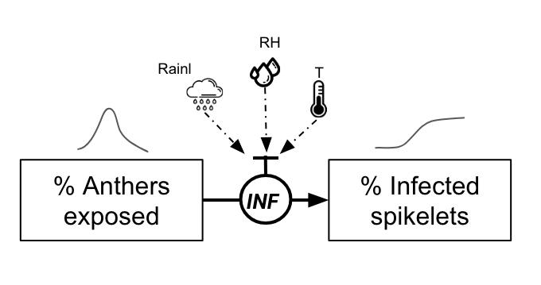

flowchart
Start((Start))
A{Disease<BR>present?}
B{Highly<BR>damaging?}
C[Risk Analysis]
D{Damaging?}
E{Frequent<BR>epidemics?}
F[Scheduled treatments]
G[Warning System]
H{Economic<BR>control?}
I[Host Resistance]
Start --> A
A -->|N| B
B -->|N| Start
D -->|N| Start
A -->|Y| D
D -->|Y| E
E -->|Y| H
B -->|Y| C
E -->|N| G
H -->|N| I
H -->|Y| F
19 Warning systems
19.1 Introduction
One practical application of plant disease epidemiology is to predict disease occurrences to guide timely management interventions, reducing crop damage and rationalizing pesticide use. Since the early to mid 1900s, warning systems (synonyms: disease forecaster, predictor) have advanced considerably. More comprehensively, these systems have evolved to a Decision Support System (DSS), when they integrate expert input, models, and databases for more nuanced management recommendations, transcending simple prediction to encompass various goals within computerized frameworks. In fact, technological progress in recent decades has boosted the development and automation of DSSs, now widely available in public and private sectors, providing direct, sophisticated guidance to crop advisors and growers (Figure 19.1).

In its core, a DSS targeting risk prediction for plant disease management are based on a disease model, or a simplified, often mathematical, representation of a system (here the pathosystem) used for making predictions or suggesting management decisions based on the risk information they provide. The models range from basic rules (e.g. if-then) and static thresholds to sophisticated simulation models covering entire disease epidemics. Historically, these models collect weather information from on site automatic weather stations, but can be fed with data from remote sensing (e.g. satellite) or data reanalysis sources.
19.2 Risk assessment and decision framework
There are basically two types of decisions related to plant disease management: tactical and strategical and these can be related to the distinct time frames of information (i.e., historical data, pre-season, growing season, and future seasons). A risk assessment and decision framework, with associated terminology, can be proposed based on such relations (Figure 19.2) and its components are explained next.

Historical data and prediction refers to those obtained from or simulated for previous years or seasons. This can include past observed weather patterns, observed or simulated disease outbreaks. The goal is to learn about the “normal” patterns associated with disease prevalence and severity. In the pre-season period, predictions are made before the actual planting or growing season starts. This could be based on early predictions of weather patterns for the season. During the growing season, real-time data is used to provide short-term predictions. This is the period when crops are in the fields and are actively monitored. Finally, for future seasons, projections (e.g. climate change scenarios) can be made for the subsequent years or decades.
Strategical decisions are those with a long-term impact and are typically based on historical data and projections for future seasons. Examples might include choosing where to plant the crops in the next years, which cultivar to plant, and making infrastructure investments. Tactical are short-term decisions typically based on real-time data or short-term predictions, especially those relevant to the current growing season. A chief example include the timing of fungicide applications.
As to risk terminology, risk analysis is a comprehensive assessment of potential disease risks, considering both historical data and projections of the future. The goal is to understand and mitigate potential threats to agricultural production. Risk prediction can be broken down into a) outlook: Broad predictions or estimations about potential risks, often based on pre-season data. Example: effects that El Niño Southern Oscillation (ENSO) may have on disease patterns; b) forecasting: short-term predictions, typically for the growing season, such as critical weather events; and c) warning: Immediate alerts about imminent risks, like an upcoming risk of plant infection, crucial for tactical decisions.
In this chapter we will focus on warning systems that make use of disease monitoring or seasonal weather to provide risk information for tactical decisions.
19.3 When is a warning system needed?
The figure and the box below provide some information on their utility. In the figure, risk analysis is defined as an approach for pathogens/diseases that are not present in a target region and for which modeling can be used for risk estimation if the disease is highly damaging where it occurs. Warning systems can be used if the disease is more erratic but still damaging when occuring. If the epidemics are too frequent and no effective and economic control is available (for example, some nematodes and virus), plant host resistance is the way to go. If there are effective and economic control measures (e.g. fungicide sprays) during the season, farmers should follows scheduled application of treatments.
When is a warning system useful?
For operational and economical use, warning systems must fulfill four criteria to be practical. A more comprehensive discussion on this topic is presented in (Campbell and Madden. L. 1990):
The targeted disease must be economically damaging to crop yield or quality. Minor diseases with negligible effects on yield or quality are unlikely to gain attention from growers and advisors.
The diseases should exhibit variability across seasons in terms of onset, epidemic growth rate, severity, or another aspect, creating uncertainty in decision-making. Diseases with predictable patterns provide minimal information and little management advantage, reducing the relevance of warning systems.
Users should be capable of acting on the system’s alerts, necessitating available and effective control measures and sufficient response time to prevent crop damage. Systems are unhelpful if practitioners can’t adapt their strategies promptly.
The system must encompass comprehensive knowledge about the disease, synthesizing accurate risk estimates. Understanding the specific interactions between host, pathogen, and environment is crucial for the system’s effectiveness and relevance.
19.4 What types of systems are there?
These systems vary significantly in structure and design, reflecting the multitude of plant diseases, objectives, available data, control strategies, developer preferences, and operational infrastructures. Usually, warning system are based on weather inputs, but they might leverage other inputs like host, pathogen, and economic factors, catering to the complexities of disease prediction.
Disease warning systems can include static or dynamic disease thresholds, direct detection of inoculum, simple rules of thumb (e.g. if-then) based on weather, infection risk during defined periods (risk models), or complex simulation models that estimate all phases of an epidemic. Let’s see some examples of these systems together with a possible implementation in R.
19.4.1 Disease thresholds
Damaging thresholds, integral to integrated pest management in entomology, can serve as a basic disease warning system. They involve economic injury levels, denoting pest abundance that equates control costs with incurred losses, and economic or action thresholds, indicating when action is necessary to avoid reaching injury levels (Pedigo et al. 1986). These concepts, while straightforward, can be quite complex in practical scenarios.
Though less prevalent than in arthropod management, thresholds guide actions like fungicide application in plant diseases, especially those directly impacting yield through photosynthetic area reduction (Leiminger and Hausladen 2012; Nutter et al. 1993). However, their application is challenging for rapid, recurrent diseases affecting high-value crops, requiring prompt intervention even at minimal disease levels. With potato late blight, for instance, the first fungicide application may need to be applied by the time disease severity reaches as low as 0.1% of the foliage. Hence, disease monitoring for detection and quantification is vital for this system. In reality, for some rapid spreading and highly damaging diseases one cannot wait to “see” the disease to start protecting the crops, for which yield protection is best when applications are made preventatively.
However, the concept of economic damage threshold (EDT) may be used as a criteria do indicate when to start with fungicide sprays. By definition, EDT is the amount of disease intensity (e.g. severity when dealing with foliar diseases) that corresponds to an economic loss that equates the control cost to combat the disease. A formula for the EDT was proposed by Mumford and Norton (Mumford and Norton 1984) and further modified by Reis (Reis et al. 2002) for use in foliar fungal diseases, as described in Equation 3:
\(EDT = \frac{F_C}{C_P . D_C} . C_e\) ,
where EDT is the disease intensity, \(F_C\) is the fungicide cost (USD/ha), \(C_P\) is the crop selling price (USD/ton), \(D_C\) is the damage coefficient (adjusted to potential yield) and \(C_e\) is the control efficacy of the fungicide (proportion of disease reduction relative to non-treated). In practice, sprays should be applied prior to reaching the EDT, which gives rise to the ADT (action damage threshold).
In a study on northern corn leaf blight in Argentina, the following values were used to calculate the EDT (De Rossi et al. 2022). Note that the authors adjusted the Dc to potential yield by multiplying by the potential yield value (8.5 ton.ha) in metric tons, since the Dc is normalized to one metric ton. More about Dc in the dedicated chapter on yield loss. The action damage threshold (ADT) was defined in that study as 20% reduction of the EDT.
calculate_EDT <- function(Fc, Cp, Dc, Ec) {
EDT <- (Fc / (Cp * Dc)) * Ce
return(EDT)
}
Fc <- 30 # fixed cost of control is 30 USD/ha.
Cp <- 112 # fixed crop price is 112 USD/ton.
Dc <- 0.1712 # for potential yield of 8.5 t/ha so 8.5 x 0.02015 = 0.1712.
Ce <- 0.70 # control efficacy of fungicide is 70%.
EDT_value <- calculate_EDT(Fc, Cp, Dc, Ce)
print(EDT_value)[1] 1.09521ADT = EDT_value * 0.80
ADT[1] 0.8761682As we can see, the EDT is variable depending on these four parameters. But how does the EDT varies according to variations on each of the parameters individually? Let’s perform some simulations with vary values of the parameter.
library(tidyverse)
library(r4pde)
# vary Crop price
Cp_values = seq(100, 500, by = 5)
EDT_values <- vector("numeric", length(Cp_values))
for(i in seq_along(Cp_values)) {
Cp = Cp_values[i]
EDT_values[i] <- calculate_EDT(Fc, Cp, Dc, Ce)
}
p_cp <- data.frame(Cp_values, EDT_values) |>
ggplot(aes(Cp_values, EDT_values))+
geom_line()+
labs(x = "Crop price (US$/ton)",
y = "EDT")+
theme_r4pde(font_size =14)
# Vary fungicide price
Fc_values = seq(10, 100, by = 5)
EDT_values <- vector("numeric", length(Fc_values))
for(i in seq_along(Fc_values)) {
Fc = Fc_values[i]
EDT_values[i] <- calculate_EDT(Fc, Cp, Dc, Ce)
}
p_fc <- data.frame(Fc_values, EDT_values) |>
ggplot(aes(Fc_values, EDT_values))+
geom_line()+
labs(x = "Control cost (US$/ha)",
y = "EDT")+
theme_r4pde(font_size =14)
# Vary damage coefficient
Dc_values = seq(0.001, 0.01, by = 0.0001)
EDT_values <- vector("numeric", length(Dc_values))
for(i in seq_along(Dc_values)) {
Dc = Dc_values[i]
EDT_values[i] <- calculate_EDT(Fc, Cp, Dc, Ce)
}
p_dc <- data.frame(Dc_values, EDT_values) |>
ggplot(aes(Dc_values, EDT_values))+
geom_line()+
labs(x = "Damage coefficient",
y = "EDT")+
theme_r4pde(font_size =14)
# Vary Control efficacy
Ce_values = seq(0.2, 1, by = 0.01)
EDT_values <- vector("numeric", length(Ce_values))
for(i in seq_along(Ce_values)) {
Ce = Ce_values[i]
EDT_values[i] <- calculate_EDT(Fc, Cp, Dc, Ce)
}
p_ce <- data.frame(Ce_values, EDT_values) |>
ggplot(aes(Ce_values, EDT_values))+
geom_line()+
labs(x = "Control efficacy (%)",
y = "EDT")+
theme_r4pde(font_size =14)library(patchwork)
(p_cp | p_fc) /
(p_dc | p_ce)
19.4.1.1 Bonus app: EDT calculator
The scenario for EDT calculation is intricate, influenced by fluctuations in several parameters. To streamline these computations, a Shiny application called EDT Calculator was developed, enabling users to specify each parameter and assess EDT (and respective 95% CI) under uncertainties in variables such as crop price and fungicide costs.

19.4.2 Monitoring season-long weather
Disease warning systems frequently predict conditions conducive to infection of the plant by the pathogen, with wetness and temperature being key variables for many foliar diseases (Bourke 1970). BLITECAST, the first computerized system (Krause et al. 1975) (which combined the Wallin and Hyre systems) provided the means of performing necessary calculations accurately and quickly and issuing recommendations to growers, is an example of successful automated warning system (Krause and Massie 1975). While initial inoculum is often undetectable, the presence of inoculum of the pathogen is assumed in many weather-based warning systems. Predictions of an outbreak are possible by tracking environmental conditions favorable for disease development.
Weather-based disease warning systems, like FAST (Forecasting Alternaria solani on tomatoes) and Wallin (Madden 1978; Wallin 1962), continuously monitor moisture and temperature for various crop diseases. These systems calculate weather favorability from environmental data, predicting infection and disease severity. They serve to guide growers on optimal spraying schedules, initiating treatments or determining application intervals based on accumulated severity values over time.
19.4.2.1 Wallin model
J.R. Wallin developed a model in the mid-20th century focusing on forecasting potato late blight, detailed across several publications (Wallin 1962). The model tracks hourly relative humidity and temperature, emphasizing periods with relative humidity of 90% or more. It calculates the number of high-humidity hours and the corresponding average temperature during the wet period. By accumulating ‘disease severity values’ (DSV) from plant emergence throughout the season, based on humidity and temperature measures, the model predicts the initial onset and subsequent spread of potato late blight. The table below summarizes the way the DSVs are obtained based on combinations of hours of relative humdity > 90% and the air temperature within the wet period.
Table. Relationship of temperature and relative humidity (RH) periods as used in the Wallin late blight forecasting system to predict disease severity values (0 to 4).
| Daily | severity | value | |||
| Average Temperature Range | 0 | 1 | 2 | 3 | 4 |
| 7.2 - 11.6 C | 15 | 16-18 | 19-21 | 22-24 | >25 |
| 11.7 - 15.0 C | 12 | 13-15 | 16-18 | 19-21 | >22 |
| 15.1 - 26.6 C | 9 | 10-12 | 13-15 | 16-18 | >19 |
Let’s calculate DVS in R based on Wallin’s system. But first we need to download hourly weather data from NASA Power project using {nasapower} R package for the locality of Viçosa, MG, Brazil during the month of March 2022.
library(nasapower)
weather <- get_power(
community = "ag",
lonlat = c(-42.88, -20.7561),
pars = c("RH2M", "T2M"),
dates = c("2022-03-02", "2022-03-31"),
temporal_api = "hourly"
)
head(weather)NASA/POWER CERES/MERRA2 Native Resolution Hourly Data
Dates (month/day/year): 03/02/2022 through 03/31/2022
Location: Latitude -20.7561 Longitude -42.88
Elevation from MERRA-2: Average for 0.5 x 0.625 degree lat/lon region = 665.27 meters
The value for missing source data that cannot be computed or is outside of the sources availability range: NA
Parameter(s):
Parameters:
RH2M MERRA-2 Relative Humidity at 2 Meters (%) ;
T2M MERRA-2 Temperature at 2 Meters (C)
# A tibble: 6 × 8
LON LAT YEAR MO DY HR RH2M T2M
<dbl> <dbl> <dbl> <dbl> <dbl> <dbl> <dbl> <dbl>
1 -42.9 -20.8 2022 3 2 0 96.3 19.4
2 -42.9 -20.8 2022 3 2 1 97.2 19.0
3 -42.9 -20.8 2022 3 2 2 98.1 18.8
4 -42.9 -20.8 2022 3 2 3 99.1 18.6
5 -42.9 -20.8 2022 3 2 4 98.9 18.6
6 -42.9 -20.8 2022 3 2 5 98.6 18.6We now need to obtain the wet period (let’s call it leaf wetness, or LW) based on hours of relative humidity >90% and then the average temperature during the LW period for each day. We can obtain these by grouping the variables by year, month and day and use mutate() and summarise().
library(tidyverse)
weather2 <- weather |>
group_by(YEAR, MO, DY) |>
mutate(LW = case_when(RH2M > 90 ~ 1,
TRUE ~ 0)) |>
filter(LW > 0) |>
summarise(Air_LWD = mean(T2M, na.rm = TRUE),
LWD = n())Now we are ready to calculate the daily DSV based on Wallin’s rules on the table and inspect the first 6 rows of the new table called df_wallin.
df_wallin <- weather2 |>
mutate(
DSV = case_when(
# Temperature Range: 7.2 - 11.6 C
Air_LWD >= 7.2 & Air_LWD <= 11.7 & LWD <= 15 ~ 0,
Air_LWD >= 7.2 & Air_LWD <= 11.7 & LWD > 15 & LWD <= 18 ~ 1,
Air_LWD >= 7.2 & Air_LWD <= 11.7 & LWD > 18 & LWD <= 21 ~ 2,
Air_LWD >= 7.2 & Air_LWD <= 11.7 & LWD > 21 & LWD <= 24 ~ 3,
Air_LWD >= 7.2 & Air_LWD <= 11.7 & LWD > 24 ~ 4,
# Temperature Range: 11.7 - 15.0 C
Air_LWD > 11.7 & Air_LWD <= 15.1 & LWD <= 12 ~ 0,
Air_LWD > 11.7 & Air_LWD <= 15.1 & LWD > 12 & LWD <= 15 ~ 1,
Air_LWD > 11.7 & Air_LWD <= 15.1 & LWD > 15 & LWD <= 18 ~ 2,
Air_LWD > 11.7 & Air_LWD <= 15.1 & LWD > 18 & LWD <= 21 ~ 3,
Air_LWD > 11.7 & Air_LWD <= 15.1 & LWD > 21 ~ 4,
# Temperature Range: 15.1 - 26.6 C
Air_LWD > 15.1 & Air_LWD <= 26.6 & LWD <= 9 ~ 0,
Air_LWD > 15.1 & Air_LWD <= 26.6 & LWD > 9 & LWD <= 12 ~ 1,
Air_LWD > 15.1 & Air_LWD <= 26.6 & LWD > 12 & LWD <= 15 ~ 2,
Air_LWD > 15.1 & Air_LWD <= 26.6 & LWD > 15 & LWD <= 18 ~ 3,
Air_LWD > 15.1 & Air_LWD <= 26.6 & LWD > 18 ~ 4,
# Default (For temperatures out of the specified ranges or any other scenarios)
TRUE ~ 0 # Assigning a default value of 0
)
)
head(df_wallin)# A tibble: 6 × 6
# Groups: YEAR, MO [1]
YEAR MO DY Air_LWD LWD DSV
<dbl> <dbl> <dbl> <dbl> <int> <dbl>
1 2022 3 2 19.2 10 1
2 2022 3 3 19.7 12 1
3 2022 3 4 19.9 10 1
4 2022 3 5 19.5 7 0
5 2022 3 6 19.0 9 0
6 2022 3 7 18.4 7 0We can visualize the daily and cumulative DSV for the monthly period after transforming the date format using as.Date() function. The dashed horizontal line in the plot indicates the action threshold of 20 cumulative DSV points, or when a spray should be applied. Please note that in real systems, the DSV is reduced to zero and another DSV counting is initiated after the spray.
df_wallin2 <- df_wallin |>
mutate(DSV2 = cumsum(DSV),
date = as.Date(sprintf('%04d-%02d-%02d', YEAR, MO, DY)))
df_wallin2 |>
ggplot(aes(date, DSV))+
geom_col(fill = "darkred")+
geom_line(aes(date, DSV2))+
geom_hline(yintercept = 20, linetype = 2)+
annotate(geom = "text", x = as.Date("2022-03-04"), y = 20.5, label = "Action threshold")+
r4pde::theme_r4pde()+
labs(x = "Date", y = "Daily and cumulative DSV")
19.4.2.2 FAST model
Here is a code to calculate daily DSV values based on the FAST table (Madden 1978) that relates the hours of relative humidity > 90% (wet period) and temperature during the wet period during a 24-hour period.
| Mean temp (°C) | 0 | 1 | 2 | 3 | 4 |
|---|---|---|---|---|---|
| 13-17 | 0-6 | 7-15 | 16-20 | 21+ | 23+ |
| 18-20 | 0-3 | 4-8 | 9-15 | 16-22 | 23+ |
| 21-25 | 0-2 | 3-5 | 6-12 | 13-20 | 21+ |
| 26-29 | 0-3 | 4-8 | 9-15 | 16-22 | 23+ |
df_fast <- weather2 %>%
mutate(
DSV = case_when(
# Temperature Range: 13 <= T < 18
Air_LWD >= 13 & Air_LWD < 18 & LWD >= 0 & LWD <= 6 ~ 0,
Air_LWD >= 13 & Air_LWD < 18 & LWD >= 7 & LWD <= 15 ~ 1,
Air_LWD >= 13 & Air_LWD < 18 & LWD >= 16 & LWD <= 20 ~ 2,
Air_LWD >= 13 & Air_LWD < 18 & LWD > 20 ~ 3,
# Temperature Range: 18 <= T < 21
Air_LWD >= 18 & Air_LWD < 21 & LWD >= 0 & LWD <= 3 ~ 0,
Air_LWD >= 18 & Air_LWD < 21 & LWD >= 4 & LWD <= 8 ~ 1,
Air_LWD >= 18 & Air_LWD < 21 & LWD >= 9 & LWD <= 15 ~ 2,
Air_LWD >= 18 & Air_LWD < 21 & LWD >= 16 & LWD <= 22 ~ 3,
Air_LWD >= 18 & Air_LWD < 21 & LWD > 22 ~ 4,
# Temperature Range: 21 <= T < 26
Air_LWD >= 21 & Air_LWD < 26 & LWD >= 0 & LWD <= 2 ~ 0,
Air_LWD >= 21 & Air_LWD < 26 & LWD >= 3 & LWD <= 5 ~ 1,
Air_LWD >= 21 & Air_LWD < 26 & LWD >= 6 & LWD <= 12 ~ 2,
Air_LWD >= 21 & Air_LWD < 26 & LWD >= 13 & LWD <= 20 ~ 3,
Air_LWD >= 21 & Air_LWD < 26 & LWD > 20 ~ 4,
# Temperature Range: 26 <= T < 30
Air_LWD >= 26 & Air_LWD < 30 & LWD >= 0 & LWD <= 3 ~ 0,
Air_LWD >= 26 & Air_LWD < 30 & LWD >= 4 & LWD <= 8 ~ 1,
Air_LWD >= 26 & Air_LWD < 30 & LWD >= 9 & LWD <= 15 ~ 2,
Air_LWD >= 26 & Air_LWD < 30 & LWD >= 16 & LWD <= 22 ~ 3,
Air_LWD >= 26 & Air_LWD < 30 & LWD > 22 ~ 4,
# Default (For temperatures out of the specified ranges or any other scenarios)
TRUE ~ 0 # Assigning a default value of 0
)
)
df_fast# A tibble: 30 × 6
# Groups: YEAR, MO [1]
YEAR MO DY Air_LWD LWD DSV
<dbl> <dbl> <dbl> <dbl> <int> <dbl>
1 2022 3 2 19.2 10 2
2 2022 3 3 19.7 12 2
3 2022 3 4 19.9 10 2
4 2022 3 5 19.5 7 1
5 2022 3 6 19.0 9 2
6 2022 3 7 18.4 7 1
7 2022 3 8 19.2 10 2
8 2022 3 9 19.6 12 2
9 2022 3 10 19.6 13 2
10 2022 3 11 19.7 12 2
# ℹ 20 more rowsdf_fast2 <- df_fast |>
mutate(DSV2 = cumsum(DSV),
date = as.Date(sprintf('%04d-%02d-%02d', YEAR, MO, DY)))
df_fast2 |>
ggplot(aes(date, DSV))+
geom_col(fill = "darkred")+
geom_line(aes(date, DSV2))+
geom_hline(yintercept = 20, linetype = 2)+
annotate(geom = "text", x = as.Date("2022-03-04"), y = 21.5, label = "Action threshold")+
r4pde::theme_r4pde()+
labs(x = "Date", y = "Daily and cumulative DSV")
19.4.2.3 Bonus app: Dashboard
For educational purposes, an interactive dashboard was developed using R Shiny. This app demonstrates the application of the Wallin (forecast for late blight of potato) and FAST (Forecast for Alternaria solani on Tomatoes) rules for calculating DSV, determining the appropriate timing for fungicide sprays (based on a defined threshold), and counting the total sprays during a selected period (Figure 19.6).
To utilize the system, users should select the model, input the latitude and longitude (or choose a location from the map), and specify the time period for the simulation, such as from plant emergence to harvest. The weather data for this simulation is sourced from the NASA Power project via the {nasapower} R package.

19.4.3 Infection risk during defined periods
Many diseases like late blight of potatoes and early blight of tomatoes, as seen in the previous section, require continuous (season long) risk monitoring to indicate multiple fungicide sprays. However, some warning systems assess risk at only at one time points, such as those crops that are most vulnerable to diseases during specific growth phases. In these cases, a single warning is issued, such as the risk of disease occurrence or occurrence at a intensity above a threshold (e.g. incidence > 30%).
Some of these systems use statistical (risk algorithms) to predict probabilities of occurrence of the event (yes/no situation) based on weather variables that occur over specific periods of time, usually when primary infections take place. For example, Fusarium head blight (FHB, caused by Fusarium graminearum) disease depends on weather events that occur around the flowering stage, when the crop is most vulnerable. This is also the case of Sclerotinia (white mold) diseases that affect flowers and the presence/absence of apothecia is key for risk assessment(Willbur et al. 2018). Such events of binary nature can be predicted using risk algorithms that consider weather variables, cultivar susceptibility, soil moisture, etc. A commonly used algorithm is the logistic regression model which deals with a binary classification.
19.4.3.1 Logistic regression: Ohio FHB models
FHB risk models were developed in the United States in the early 2000s to predict the risk of an epidemic, or when disease severity in the field was greater than 10% (De Wolf et al. 2003). In the paper, the epidemic cases were classified as 0 and 1, according to that threshold, and several logistic regression models were fitted to the data using a summary of weather-related variables from two defined periods: seven days prior to flowering date and 10 days following flowering date (50% of wheat heads with anthers).
Among several models, the authors found that a single variable model (model A) exhibited a good accuracy (0.83). The selected variable consisted of a combination of temperature and humidity for the 10-day period after flowering. Named TRH9010, it corresponds to the total number of hours, within the 10-day post-flowering period, when the temperature (T) was >=15 and <= 30 oC and relative humidity (RH) was >90%.
Let’s implement this model in R and calculate the probability of infection. As usual, we first need to download hourly data from NASA Power project for a period of three years. Let’s work with data from Wooster, OH, United States.
library(nasapower)
weather <- get_power(
community = "ag",
lonlat = c(-81.9399, 40.7982),
pars = c("RH2M", "T2M", "PRECTOTCORR"),
dates = c("2020-01-01", "2022-12-31"),
temporal_api = "hourly"
)
head(weather)NASA/POWER CERES/MERRA2 Native Resolution Hourly Data
Dates (month/day/year): 01/01/2020 through 12/31/2022
Location: Latitude 40.7982 Longitude -81.9399
Elevation from MERRA-2: Average for 0.5 x 0.625 degree lat/lon region = 309.08 meters
The value for missing source data that cannot be computed or is outside of the sources availability range: NA
Parameter(s):
Parameters:
RH2M MERRA-2 Relative Humidity at 2 Meters (%) ;
T2M MERRA-2 Temperature at 2 Meters (C) ;
PRECTOTCORR MERRA-2 Precipitation Corrected (mm/hour)
# A tibble: 6 × 9
LON LAT YEAR MO DY HR RH2M T2M PRECTOTCORR
<dbl> <dbl> <dbl> <dbl> <dbl> <dbl> <dbl> <dbl> <dbl>
1 -81.9 40.8 2020 1 1 0 86.4 -3.55 0.01
2 -81.9 40.8 2020 1 1 1 88.8 -3.92 0.01
3 -81.9 40.8 2020 1 1 2 88.3 -3.74 0.01
4 -81.9 40.8 2020 1 1 3 85.3 -3.49 0
5 -81.9 40.8 2020 1 1 4 80.2 -3.18 0
6 -81.9 40.8 2020 1 1 5 75.6 -3.06 0 We can then create a function named calculate_TRH9010(). This function calculates the number of hours when specified condition is met (i.e., hours when 15 <= T <= 30 & RH > 90), the probability (p) of infection, and the classification of the epidemic (epi) as 0 or 1 based on a defined threshold for p (0.36 in this case) (De Wolf et al. 2003). The function’s arguments are the weather data frame, YEAR, MO, and DY, allowing us to estimate the risk for a specific day (the flowering date) within the downloaded period. It’s important to note that, in the original model, the variables were normalized (its value divided by the maximum observed value). Thus, the hour count for TRH9010 should be divided by the constant 136.
calculate_TRH9010 <- function(data, YEAR, MO, DY){
start_row <- which(data$YEAR == YEAR & data$MO == MO & data$DY == DY & data$HR == 0)[1]
if ((nrow(data) - start_row) < 9 * 24){
return(list(TRH9010 = NA, y = NA, p = NA, epi = NA))
}
subset_data <- data[start_row:(start_row + 9 * 24 - 1),]
condition_met <- with(subset_data, T2M >= 15 & T2M <= 30 & RH2M > 90)
total_hours <- sum(condition_met)
y <- -3.3756 + 6.8128 * (total_hours / 136) # divide by maximum of 136 as in the paper
p <- exp(y) / (1 + exp(y))
epi <- ifelse(p > 0.36, 1, 0)
return(list(TRH9010 = total_hours, p = p, epi = epi))
}Now we apply the function for the 1st of June 2021 as flowering date. The output is the hour count, the probability and the epidemic classification.
results <- calculate_TRH9010(weather, YEAR = 2021, MO = 6, DY = 1)
results$TRH9010
[1] 62
$p
[1] 0.4329649
$epi
[1] 1We may want to apply the function for a series of days within a given month. Let’s write code to predict the risk for the 15 days of June using a for() loop which will store the results in a list, but we can further transform to a dataframe using map_dfr() function.
num_days <- 15
all_results <- list()
for(day in 1:num_days){
all_results[[paste0("", day)]] <- calculate_TRH9010(weather, YEAR = 2021, MO = 6, DY = day)
}
# transform results to a dataframe
df <- all_results %>%
map_dfr(~ as.data.frame(t(.)), .id = "day")
# Change variables to numeric
df$p <- as.numeric(df$p)
df$day <- as.numeric(df$day)
df$epi <- as.numeric(df$epi)Finally we plot the results.
ggplot(df, aes(day, p, fill = factor(epi))) +
geom_col()+
scale_x_continuous(n.breaks = 15)+
scale_fill_manual(values = c("grey60", "darkred"))+
geom_hline(yintercept = 0.36, linetype = 2)+
r4pde::theme_r4pde(font_size = 12)+
ylim(0,1)+
theme(legend.position = "bottom")+
labs(x = "Wheat flowering day in june 2021", y = "Risk probability",
fill = "Epidemic classification",
title = "FHB risk by Ohio (TRH9010) model",
subtitle = "Location: Wooster, Ohio",
caption = "Model source: De Wolf et al. (2002)")
19.4.3.2 Mechanistic models: Brazilian FHB model
Different from the previous approach, where statistical models are fitted to data, some models are called mechanistic, dynamic or process-based. These are designed based on the knowledge of the processes of the disease cycle and the factors that affect these processes (González-Domínguez et al. 2023). These usually operate in a hourly to daily basis and can be quite complex and sophisticated with numerous examples being found in the literature (Caffi et al. 2007, 2010; Rossi et al. 2014; Salotti et al. 2022; Salotti and Rossi 2023).
One example is a mechanistic model for FHB developed in Brazil. In its core, the model is based on the daily simulation of the flowering process, the most vulnerable phase of the wheat crop, and events that contribute to infect the flowers. The original model (Del Ponte et al. 2005) integrates several sub models that estimate the daily proportion of flowers, a density of inoculum in a “spore cloud” and a proportion of infected flowers - all these variables being driven by daily variables of temperature and wetness variables such as rainfall and relative humidity.
A modified, simplified version of the model that takes into account only the flowering process and weather-variables that drives infection, was written in R and is presented here for illustration.

The function simulate_FHB() requires a starting date and weather data frame (adapted here to use NASA Power data set) to run a simulation during 20 days.
Among the several simplifications, which were based on the simulated results of the original model, flowering dynamics was assumed to follow a normal distribution over 10 days, and is adjusted to ensure that the peak in the proportion of anthers is set to 0.8. An adjustment is made so that anthers are set to 0 after the 10th day.
\([ \text{antherproportions} = \left\{ \begin{array}{ll} \frac{1}{\sigma\sqrt{2\pi}} \exp\left(-\frac{1}{2} \left(\frac{x-\mu}{\sigma}\right)^2\right) & \text{for } x = 1, \ldots, 10 \\ 0 & \text{for } x = 11, \ldots, 20 \end{array} \right. ]\) ,
where \(𝞵\) = 6 and \(𝝈\) = 2.
The probability of the infection of the flowers is calculated as in the paper. It is based on an equation that considers daily temperature (T) and gives the proportion of flowers getting infected on any given day when a condition for infection is met.
\(INF=0.001029×exp(0.1957×T)\)
There are three conditions for an infection event, similar to what is described in the article (Del Ponte et al. 2005):
Continuous 2-day Rain & High Humidity: There should be rain (> 0.5 mm) and the average humidity over two consecutive days should be high (> 80%).
Rain Followed by Dry Day & High Humidity: Rain and high humidity (> 80%), followed by a day without rain but still with high humidity (> 85%).
Dry Day & High Humidity Followed by Rain: A day without rain but with high humidity (> 85%), followed by a day with both rain and high humidity (> 80%).
Infection then occurs when any of the above conditions are met. In this simpler version (without the inoculum factor), the proportion of infected spikelets, assuming that infected anthers will give rise to infected spikelets, is given by
\(InfectedSpikelets = AntherProportions×INF\)
simulate_FHB <- function(start_date, weather_data) {
start_date <- as.Date(start_date, format = "%Y-%m-%d")
# Extract weather data for 30 days starting from the provided start_date
weather_subset <- subset(weather_data, YYYYMMDD >= start_date & YYYYMMDD < start_date + 20)
# Simulation for 20 days
x <- 1:20
# Normal distribution formula for 10 days using fixed peak day (mu) and spread (sigma)
mu <- 6
sigma <- 2
anther_proportions <- c((1 / (sigma * sqrt(2 * pi))) * exp(-0.5 * ((x[1:10] - mu) / sigma)^2), rep(0, 10))
# Adjust the values to have a peak of 0.8
max_value <- max(anther_proportions)
scaling_factor <- 0.8 / max_value
anther_proportions <- anther_proportions * scaling_factor # This scales the entire vector
# Zero out the anthers after the day they should be zero
anther_proportions[11:20] <- 0
# Calculate the INF value
INF <- 0.001029 * exp(0.1957 * weather_subset$T2M)
# Calculate average RH for two consecutive days
avg_RH2M_2days <- (weather_subset$RH2M + c(weather_subset$RH2M[-1], NA)) / 2
# Check conditions for infection
condition1 <- (weather_subset$PRECTOTCORR > 0.3) & (avg_RH2M_2days > 80)
consecutive_rain_high_humidity <- condition1 & c(FALSE, head(condition1, -1))
preceded_condition <- (weather_subset$PRECTOTCORR > 0.3) & (avg_RH2M_2days > 80) &
c(FALSE, head(weather_subset$RH2M, -1) > 85) &
c(head(weather_subset$PRECTOTCORR, -1) <= 0.3, FALSE)
succeeded_condition <- (weather_subset$PRECTOTCORR > 0.3) & (avg_RH2M_2days > 80) &
c(tail(weather_subset$RH2M, -1) > 85, FALSE) &
c(FALSE, tail(weather_subset$PRECTOTCORR, -1) <= 0.3)
# Combine conditions
infection_trigger <- consecutive_rain_high_humidity == 1 | preceded_condition | succeeded_condition
# Calculate infected anthers based on conditions
infected_spikelets <- ifelse(infection_trigger, anther_proportions * INF, 0)
# Cumulative infected anthers
cumulative_infected_spikelets <- cumsum(infected_spikelets)
# Compile results
result_df <- data.frame(
Date = weather_subset$YYYYMMDD,
T2M = weather_subset$T2M,
RAIN = weather_subset$PRECTOTCORR,
RH2M = weather_subset$RH2M,
Flowers = round(anther_proportions,3),
InfSpikelets = round(infected_spikelets,3),
CumInfSpikelets = round(cumulative_infected_spikelets, 3)
)
return(result_df)
}Let’s download the data again for the location of Wooster, Ohio during a 9-year period.
library(nasapower)
wooster <- get_power(
community = "ag",
lonlat = c(-81.9399, 40.7982),
pars = c("RH2M", "T2M", "PRECTOTCORR"),
dates = c("2015-01-01", "2023-09-30"),
temporal_api = "daily"
)
woosterNASA/POWER CERES/MERRA2 Native Resolution Daily Data
Dates (month/day/year): 01/01/2015 through 09/30/2023
Location: Latitude 40.7982 Longitude -81.9399
Elevation from MERRA-2: Average for 0.5 x 0.625 degree lat/lon region = 309.08 meters
The value for missing source data that cannot be computed or is outside of the sources availability range: NA
Parameter(s):
Parameters:
RH2M MERRA-2 Relative Humidity at 2 Meters (%) ;
T2M MERRA-2 Temperature at 2 Meters (C) ;
PRECTOTCORR MERRA-2 Precipitation Corrected (mm/day)
# A tibble: 3,195 × 10
LON LAT YEAR MM DD DOY YYYYMMDD RH2M T2M PRECTOTCORR
<dbl> <dbl> <dbl> <int> <int> <int> <date> <dbl> <dbl> <dbl>
1 -81.9 40.8 2015 1 1 1 2015-01-01 67.4 -5.04 0
2 -81.9 40.8 2015 1 2 2 2015-01-02 79.8 -2.1 0
3 -81.9 40.8 2015 1 3 3 2015-01-03 94 1.96 25.7
4 -81.9 40.8 2015 1 4 4 2015-01-04 88.9 3.89 8.65
5 -81.9 40.8 2015 1 5 5 2015-01-05 63.1 -9.22 0.54
6 -81.9 40.8 2015 1 6 6 2015-01-06 76.6 -9.92 2.3
7 -81.9 40.8 2015 1 7 7 2015-01-07 70.9 -12.3 0.58
8 -81.9 40.8 2015 1 8 8 2015-01-08 72.2 -13.7 0.54
9 -81.9 40.8 2015 1 9 9 2015-01-09 75.6 -10.8 1.41
10 -81.9 40.8 2015 1 10 10 2015-01-10 78.6 -14.2 0.02
# ℹ 3,185 more rowsNow that we have the data, we can simulate FHB for a specific start flowering date.
start_date <- "2018-05-15"
result <- simulate_FHB(start_date, wooster)
head(result, 15) Date T2M RAIN RH2M Flowers InfSpikelets CumInfSpikelets
1 2018-05-15 19.08 4.11 88.19 0.035 0.000 0.000
2 2018-05-16 17.19 0.09 84.75 0.108 0.000 0.000
3 2018-05-17 18.76 0.05 80.50 0.260 0.000 0.000
4 2018-05-18 18.50 0.15 82.75 0.485 0.000 0.000
5 2018-05-19 19.95 9.49 86.50 0.706 0.000 0.000
6 2018-05-20 16.60 1.43 87.38 0.800 0.021 0.021
7 2018-05-21 17.75 15.55 83.50 0.706 0.023 0.045
8 2018-05-22 19.94 9.70 87.06 0.485 0.025 0.069
9 2018-05-23 16.47 0.05 76.00 0.260 0.000 0.069
10 2018-05-24 20.43 0.00 60.81 0.108 0.000 0.069
11 2018-05-25 21.20 0.03 68.94 0.000 0.000 0.069
12 2018-05-26 21.05 9.51 86.19 0.000 0.000 0.069
13 2018-05-27 23.13 0.60 80.81 0.000 0.000 0.069
14 2018-05-28 25.53 0.01 73.81 0.000 0.000 0.069
15 2018-05-29 24.91 0.01 80.69 0.000 0.000 0.069Finally we can plot the dynamics of the flowering and the percent of infected spikelets during the period of 20 days after first flowers appear in the field.
# Plotting the data
library(tidyverse)
p1 <- result |>
ggplot(aes(x = Date)) +
geom_area(aes(y = Flowers,
color = "Proportion of flowers"),
linewidth = 1, fill = "yellow", alpha = 0.5) +
geom_line(aes(y = CumInfSpikelets,
color = "Cum. Infected Spikelets"),
linewidth =1) +
labs(title = "FHB simulation model",
subtitle = paste("% Infected spikelets = ",
round(max(result$CumInfSpikelets*100, na.rm = TRUE),2), "%"),
y = "Proportion", x = "Date", color = "Legend") +
r4pde::theme_r4pde(font_size = 12)+
theme(legend.position = "bottom")p2 <- result |>
ggplot(aes(x = Date))+
geom_col(aes(x = Date, y = RAIN))+
geom_line(aes(y = T2M))+
geom_line(aes(y = RH2M), linetype = 2)+
labs(y = "Value",
title = "Rain, T and RH")+
r4pde::theme_r4pde(font_size = 12)library(patchwork)
p1 / p2
As in the previous section, we can apply the function for a series of days and see how the percent of infected spikelets fluctuates over time considering each day as a starting day for flowering.
# Vector of dates
dates_vector <- seq(as.Date("2019-05-15"), as.Date("2019-05-30"), by="days")
# Apply function and extract max cumulative infection
max_cumulative_infections <- sapply(dates_vector, function(date) {
result <- simulate_FHB(date, wooster)
max(result$CumInfSpikelets, na.rm = TRUE)
})
df_results <- data.frame(
Date = dates_vector,
MaxCumulativeInfection = max_cumulative_infections
)
# plot the results
df_results |>
ggplot(aes(Date, MaxCumulativeInfection*100))+
geom_col(fill = "darkred", alpha = 0.8)+
labs(title = "FHB simulation model",
subtitle = "Wooster, Ohio - 2019",
x = "Starting day of flowering", y = "% Infected Spikelets")+
r4pde::theme_r4pde(font_size = 14)
19.5 Practical considerations
While initial disease warning systems faced underuse, this was attributed to their primary deployment by advisors rather than growers directly, and an evolution where users, through experience, develop simplified rules that diminish the need for constant system consultation. Notable examples, such as the CPO in Denmark and FARMSCAPE in Australia, have documented this learning process, leading to less reliance on such tools. Growers often favor ‘good enough’ solutions that evolve from system use, which may reduce the need for direct interaction with the system over time.
However, certain diseases with specific control timing requirements, regulatory pressures, or those affecting high-value crops necessitate direct engagement with warning systems. In these scenarios, growers prioritize yield consistency and economic security over reduced pesticide usage, especially when faced with asymmetric risks associated with incorrect management decisions. It has been suggested that disease warning systems might be more beneficial and accepted for crops of intermediate or lower value, where the cost of mismanagement is more balanced. Essential to the success and adoption of these systems is the active involvement of end-users throughout the development process to ensure the system’s features align with their practical farming goals and constraints.